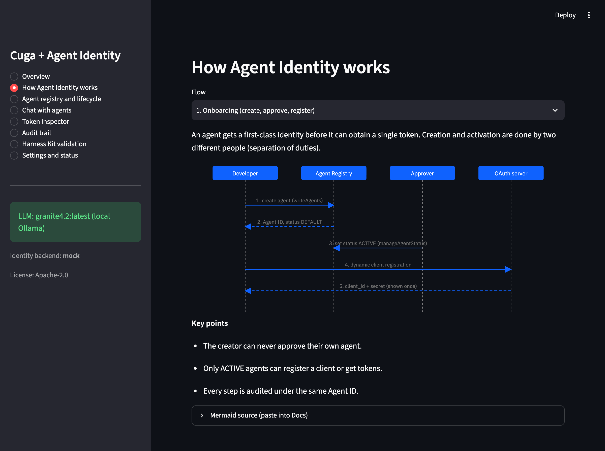
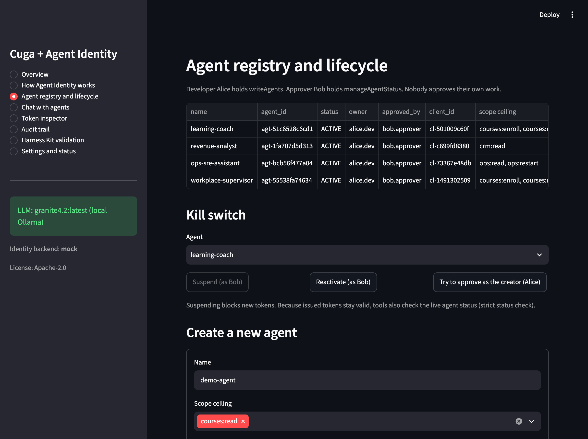
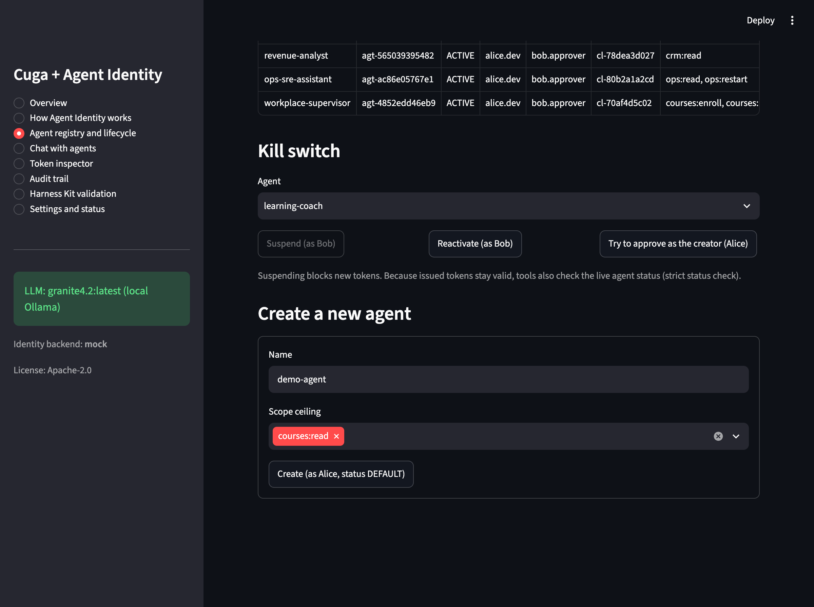
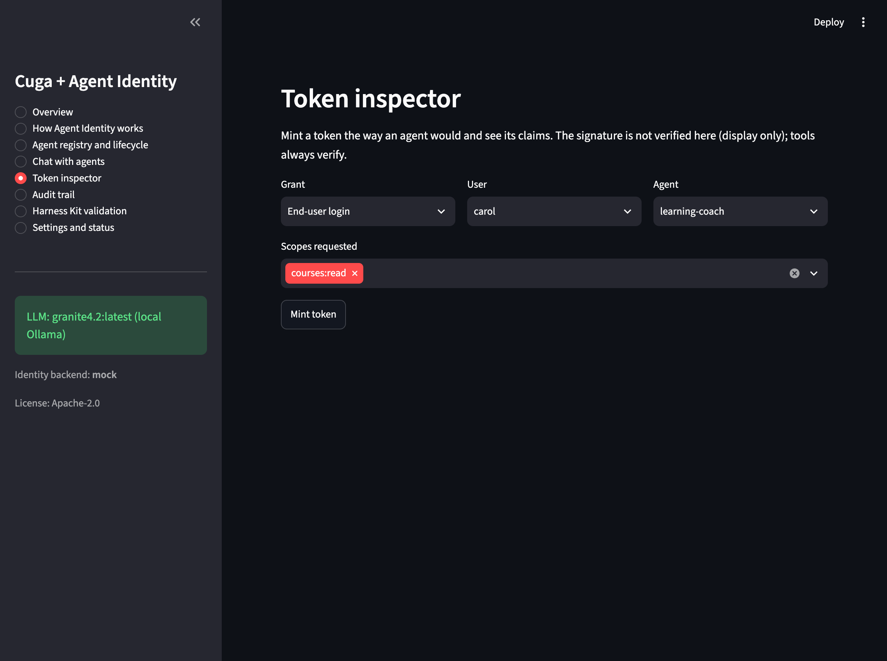
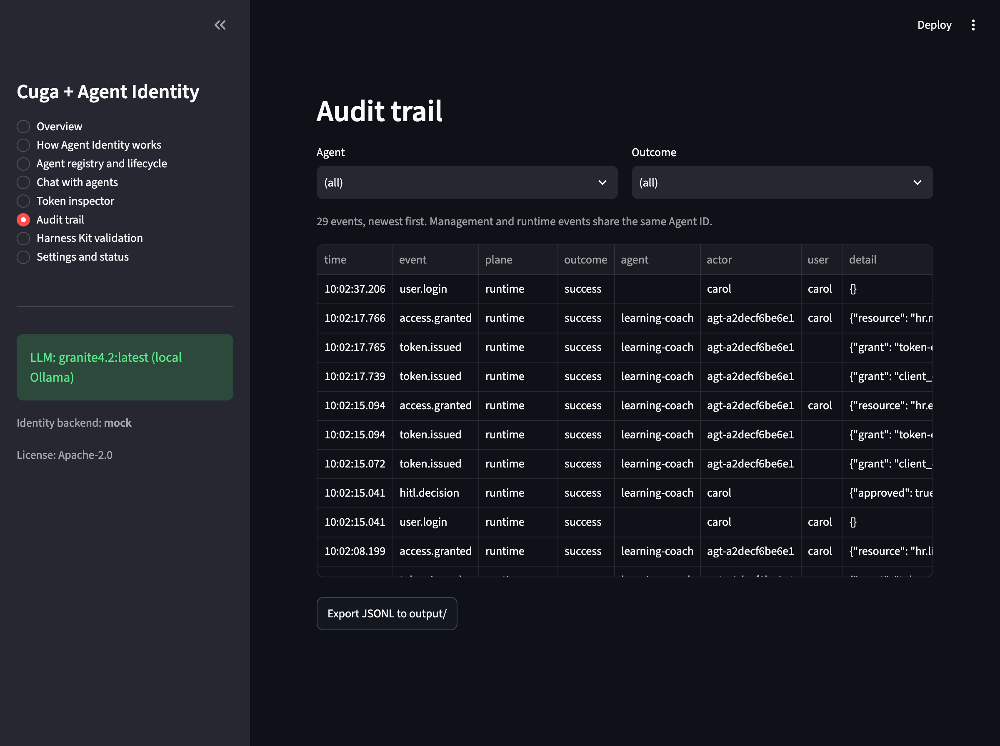
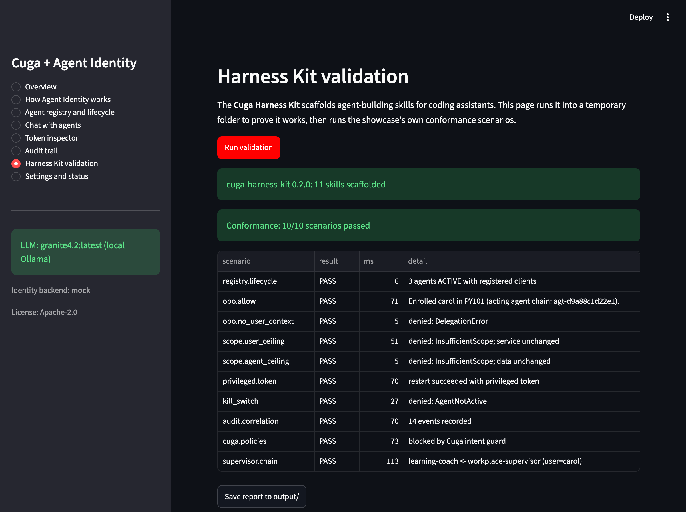
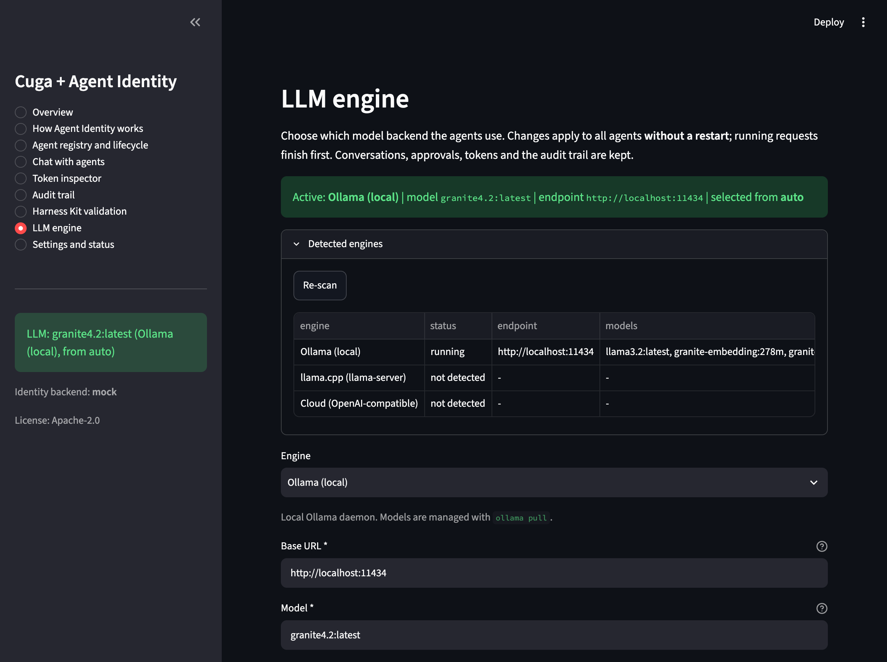
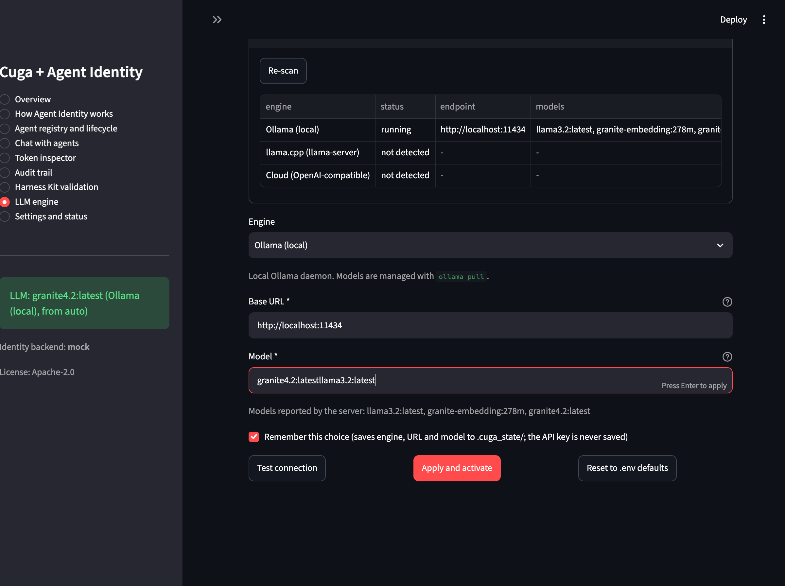
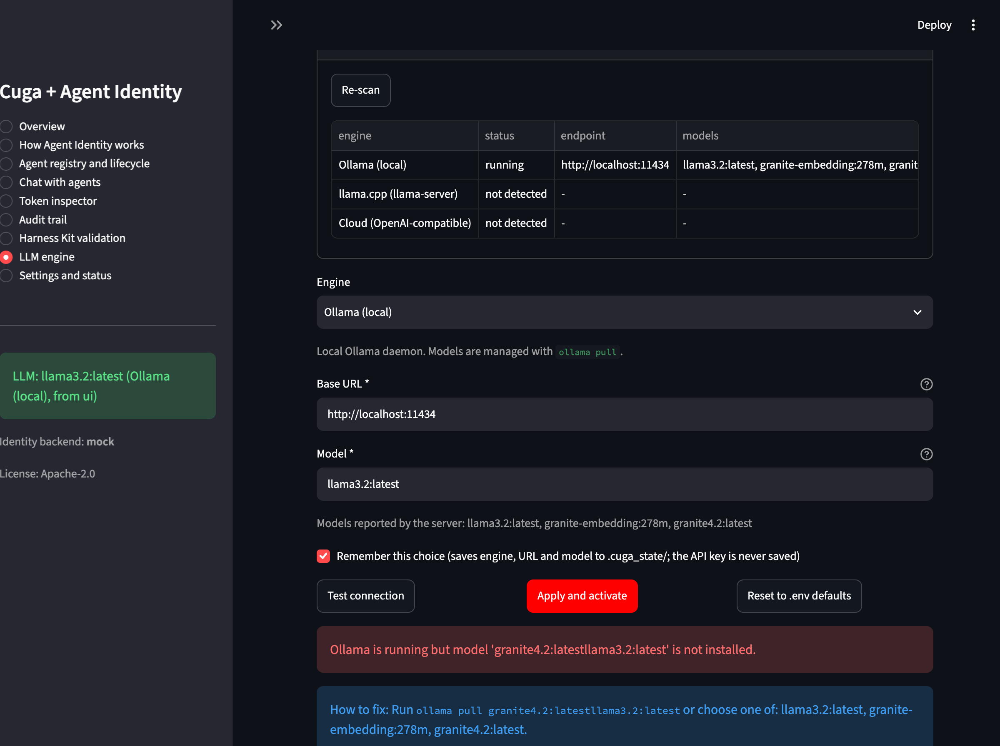
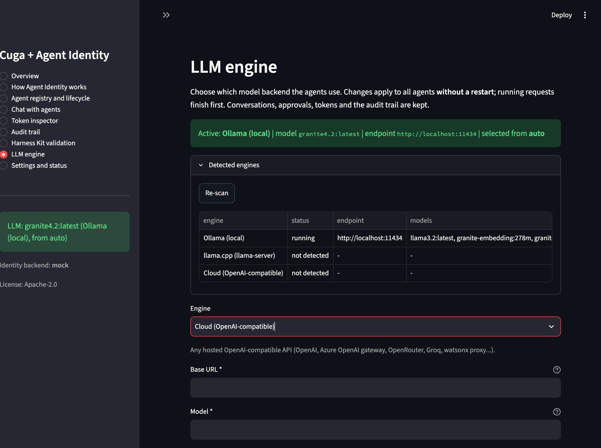

Giving AI agents a governed identity
A runnable reference that shows how to create, approve, deploy, test and switch off AI agents so that every action can be traced to one agent, one person and one permission.
Cuga Agent is used for real. IBM Agent Identity has no public SDK, so the identity service is a local mock of IBM Verify (simulated). The engine layer was exercised live against Ollama only; llama.cpp and cloud were tested with mocked HTTP. Section 7 lists every limit.
Introduction
What Agent Identity is
An AI agent acts on its own: it reads data, calls tools and sometimes changes things. Agent Identity gives each agent its own verifiable identity in the same way a company gives each employee a badge. The agent is registered, approved by a different person, and then proves who it is on every call.
Its core purpose is to answer four questions about every action an agent takes:
Who did it?
Every call carries the Agent ID, so the audit log tells one story per agent.
What may it do?
A scope ceiling is set at approval time. A token can never exceed it.
For whom?
When acting for a person, the token says so: the person is the subject and the agent is the actor.
Can we stop it?
Suspending the agent (the kill switch) stops it, without breaking other agents.
What it is used for, in practical terms
Without an identity, an agent borrows someone's password or a shared account. Nobody can tell who did what, and the only way to stop a misbehaving agent is to stop everything. With an identity, each agent has its own badge, its own limits and its own off switch.
The agent acts as itself. It gets a token through the OAuth client_credentials grant. The token carries agent_id. Example: the Revenue Analyst reads CRM data with a read-only ceiling (crm:read).
The agent acts for the signed-in person. The gateway exchanges the user's token for a delegated token (RFC 8693): sub is the user, act.sub is the agent. The effective scope is the intersection of what the user may do and what the agent may do. Example: the Learning Coach enrols Carol in a course.
Risky actions need a person and a narrow token. A human approves the tool call, then the gateway mints a very short-lived token whose authorization_details name the exact action. Examples: an expensive course enrolment, or a service restart by the Ops SRE Assistant.
One agent delegates to another. The Workplace Supervisor hands work to a worker agent and the token keeps the chain as nested act claims, so an auditor can see "user, then supervisor, then worker".
Key benefits and use cases
| Benefit | What it means in practice | Where you see it here |
|---|---|---|
| Traceability | One audit trail per agent, keyed by Agent ID. | Audit trail page; audit.correlation scenario |
| Least privilege | Read-only agents cannot write, even if a write tool exists. | Revenue Analyst; scope.agent_ceiling |
| Safe delegation | An agent can never do more than the person it acts for. | Learning Coach; scope.user_ceiling |
| Separation of duties | The creator of an agent cannot approve it. | Registry page; SeparationOfDutiesError |
| Fast containment | Suspend one agent without touching the rest. | Kill switch flow; kill_switch scenario |
| Defence in depth | Policies before the model, identity checks inside every tool. | Cuga guards + gateway |
Typical use cases 4 examples
- HR self-service: an assistant enrols employees in training, asking for approval above a cost limit.
- Sales analytics: a read-only agent summarises revenue and cannot export the customer base.
- IT operations: an assistant restarts a service only after approval, with a token that lives for seconds.
- Multi-agent workplace: a supervisor routes requests and the full chain of responsibility is kept.
Application overview
Project goals and scope
Teach
Explain Agent Identity with six interactive flows, a token inspector and an audit trail.
Provide a reference
Typed config, structured logging, error handling and tests that developers can copy.
Run anywhere locally
No cloud dependency. A fake model lets tests and the demo run offline.
In scope
- Agent lifecycle and OAuth client registration
- Autonomous, delegated, privileged and chained access
- Cuga policies and human approval
- Pluggable LLM engines
- Conformance scenarios and Harness Kit
Out of scope
- A live IBM Verify tenant (a reference HTTP backend exists, untested)
- Production secret storage
- Multi-user hosting of the UI
Integration points
| Integration | Role in the project | Status |
|---|---|---|
| cuga-agent | Runs every agent: tools, intent-guard and tool-approval policies, human-in-the-loop resume, supervisor delegation (cuga==0.4.5). | Used for real |
| cuga-project | The GitHub organisation behind the Cuga ecosystem; the source of the two packages here. | Referenced |
| cuga-harness-kit | Scaffolds 11 agent-building skills for coding assistants. It is not a test runner, so the project adds its own 10 conformance scenarios. | Used for real |
| IBM Agent Identity | The identity model the showcase implements: agent registry, separation of duties, OAuth clients, token exchange. | Simulated locally |
Core components
Four agents
Learning Coach: on behalf of a user, with approval.
Revenue Analyst: autonomous, read-only.
Ops SRE Assistant: privileged restart.
Workplace Supervisor: delegates to the others.
Streamlit UI
Nine pages on port 8601: Overview, How Agent Identity works, Agent registry and lifecycle, Chat with agents, Token inspector, Audit trail, Harness Kit validation, LLM engine, Settings and status.
Harness
python -m harness scaffolds the 11 Harness Kit skills into a temporary folder and runs 10 conformance scenarios. Reports go to output/.
Documentation
README.md, Docs/Quickstart.md, Docs/Architecture.md, Docs/AgentIdentity-Concepts.md, Docs/BestPractices.md and this page.
Project layout source map
app.py Streamlit UI (9 pages)
demo.py CLI demo, writes output/demo_<timestamp>.md
agent_identity/ config, backend, tokens, lifecycle, gateway, tools,
runtime, llm_engines, errors, audit, ui_helpers
agents/ learning_coach, revenue_analyst, ops_sre_assistant
harness/ Harness Kit integration + conformance scenarios
tests/ pytest suite (offline, fake LLM)
scripts/ setup, start, stop, test, cleanup, container helpers
Docs/ Quickstart, Architecture, concepts, best practicesArchitecture
Component view
The UI talks to one facade, Showcase. Cuga runs the agents. Every tool call passes through the identity gateway, which asks the identity service for a token and validates it before any business logic runs.
flowchart LR
User([End user]) --> UI["Streamlit UI
app.py"]
UI --> SC["Showcase facade
runtime.py"]
SC --> CUGA["Cuga agents
policies + tools"]
CUGA -->|tool call| GW["Identity gateway
gateway.py"]
GW -->|mint token| SVC["AgentIdentityService
lifecycle.py"]
SVC --> BE{{Identity backend}}
BE --> MOCK["MockVerifyBackend
default"]
BE --> HTTP["HttpVerifyBackend
real tenant, untested"]
GW -->|validate| TV["TokenValidator
sig, aud, exp, scope, status"]
TV --> TOOLS[("Business data
courses, CRM, services")]
SVC --> AUD[("Audit log
keyed by Agent ID")]
TV --> AUD
CUGA -.->|shared model| ENG["LLM engine layer
llm_engines.py"]
ENG -.-> OLL[Ollama]
ENG -.-> LCP["llama.cpp"]
ENG -.-> CLD["Cloud OpenAI-compatible"]
HK["Harness Kit +
conformance scenarios"] --> SC
Cuga policies (intent guard, tool approval) run before a tool is called and shape what the agent attempts. Identity checks (signature, audience, expiry, scope, agent status) run inside every tool and decide what is allowed. Neither replaces the other, and the model never sees a token.
One delegated request, step by step
sequenceDiagram
participant U as User (Carol)
participant C as Cuga agent
participant G as Identity gateway
participant I as Identity service
participant T as Tool or API
U->>C: Enroll me in SEC301
C->>C: intent guard, then approval policy
C-->>U: needs approval (human in the loop)
U->>C: Approve
C->>G: tool call enroll_expensive_course
G->>I: token exchange (user token + agent credentials)
I-->>G: JWT sub=carol, act.sub=agent, authorization_details
G->>T: validated call (scope, status, privileged)
T-->>C: result
C-->>U: answer (audit written under the Agent ID)
LLM engine layer
The agents need a language model to understand requests. You can choose where it runs: on your own computer (Ollama or llama.cpp) or at a cloud provider. You can change the choice in the UI while the application runs.
All agents share one chat model. Which backend provides it is chosen at start-up and can be changed at any time from the LLM engine page.
| Engine | Id | Talks to | Needs | Verified |
|---|---|---|---|---|
| Ollama (local, default) | ollama | AI_OLLAMA_BASE_URL, default http://localhost:11434 | A running daemon and ollama pull <model> | Live |
| llama.cpp | llamacpp | llama-server OpenAI-compatible API | llama-server -m model.gguf --jinja --port 8080 (--jinja enables tool calling) | Mocked HTTP; failure path live |
| Cloud | cloud | Any OpenAI-compatible hosted API | URL, model and API key; https:// for remote hosts | Mocked HTTP only |
| Fake | fake | Nothing (deterministic, offline) | Used by tests, the harness and demo.py | Live |
flowchart TB
subgraph UIL["UI: LLM engine page"]
FORM["Form + validation"]
TESTB["Test connection"]
APPLY["Apply and activate"]
end
subgraph LAYER["agent_identity/llm_engines.py"]
MGR["EngineManager
detect, test, resolve, override file"]
OLLB["OllamaEngine"]
LCPB["LlamaCppEngine"]
CLDB["CloudEngine"]
FAKB["FakeEngine"]
end
subgraph RT["runtime.py"]
SW["Showcase.switch_engine
gate, drain, swap, rollback"]
end
FORM --> MGR
TESTB --> MGR
APPLY --> SW
SW --> MGR
MGR --> OLLB
MGR --> LCPB
MGR --> CLDB
MGR --> FAKB
SW -->|audit| AUDL[("Audit log")]
Configuration and switching mechanisms
The engine is resolved in this order. The first engine that answers wins. A result that comes after a failed attempt is labelled fallback and shown as a warning.
flowchart TD
A[App start] --> B{"UI choice saved?
.cuga_state/llm_engine.json"}
B -->|yes, engine answers| U["Use it - source: ui"]
B -->|no or not reachable| C{"AI_LLM_ENGINE set?"}
C -->|yes, engine answers| E["Use it - source: env"]
C -->|no or not reachable| D["Try engines in AI_LLM_FALLBACK_ENGINES order
only if configured or detected"]
D -->|one answers| F["Use it - source: auto"]
D -->|none| G["Hard-coded Ollama localhost:11434 + granite4.2"]
G -->|not reachable| H["Offline fake model + warning in the UI"]
Try it: engine resolver simulator interactive
Set what is available and see which engine the rules above would pick. This is a teaching model of the documented order, not a probe of your machine.
Fallback order: ollama, llamacpp, cloud (AI_LLM_FALLBACK_ENGINES)
Switching at runtime without a restart
sequenceDiagram
participant U as User
participant P as LLM engine page
participant S as Showcase
participant E as Old engine
participant N as New engine
U->>P: choose engine, fill the form
P->>P: validate inputs (required fields, https for remote cloud)
U->>P: Test connection
P->>N: probe (list models or ping)
N-->>P: ok, or error with How to fix
U->>P: Apply and activate
P->>S: switch_engine(new)
S->>N: test again
S->>S: close the gate (new turns wait)
S->>S: wait for running turns to finish (drain timeout)
S->>S: swap model, rebuild agent graphs
S-->>P: switched (audit llm.engine_switched)
Note over S,E: On any failure the old engine is restored,
audit llm.engine_switch_failed, and the UI shows the cause and a fix
Switch state machine and what survives a switch detail
stateDiagram-v2
[*] --> Serving
Serving --> Testing: switch_engine(new)
Testing --> Serving: test fails (nothing changed)
Testing --> Draining: test ok, gate closed
Draining --> Swapping: in-flight turns finished
Draining --> Restoring: drain timeout
Swapping --> Serving: model replaced, graphs rebuilt
Swapping --> Restoring: build fails
Restoring --> Serving: old engine back, switch_failed audited
- Survives: conversations and pending approvals (per-agent
MemorySaver), the agent registry, tokens and the audit log. - Rebuilt lazily: each Cuga graph, on the agent's next turn.
- Caveat: the graph reset uses private Cuga 0.4.5 attributes (
_model,_graph,_compiled_graph). Re-check it when Cuga is upgraded.
Configuration reference (.env) 13 settings
| Variable | Default | Meaning |
|---|---|---|
AI_LLM_ENGINE | empty (auto) | ollama, llamacpp, cloud or fake |
AI_LLM_FALLBACK_ENGINES | ollama,llamacpp,cloud | Order tried when nothing is chosen explicitly |
AI_LLM_TIMEOUT | 300 | Seconds one model call may take |
AI_LLM_MODE | ollama | fake forces the offline model |
AI_OLLAMA_BASE_URL, AI_OLLAMA_MODEL | http://localhost:11434, granite4.2:latest | Ollama settings |
AI_LLAMACPP_BASE_URL, AI_LLAMACPP_MODEL | empty | llama.cpp server; empty URL means probe |
AI_LLAMACPP_PROBE_URLS | http://localhost:8080,http://localhost:9931 | URLs probed to detect llama-server |
AI_CLOUD_BASE_URL, AI_CLOUD_MODEL, AI_CLOUD_API_KEY | empty | Auto-selected only when all three are set |
# Persistent default: use a local llama.cpp server AI_LLM_ENGINE=llamacpp AI_LLAMACPP_BASE_URL=http://localhost:8080 AI_LLM_FALLBACK_ENGINES=llamacpp,ollama,cloud # Cloud engine (the key stays here, never in the UI file) AI_CLOUD_BASE_URL=https://api.example.com/v1 AI_CLOUD_MODEL=your-model AI_CLOUD_API_KEY=your-key
API keys are held as SecretStr and are never logged or shown. The UI saves engine, URL and model only, in .cuga_state/llm_engine.json (mode 600). Plain http:// to a remote host is refused.
Agent lifecycle
State machine
An agent starts as a record created by a developer and becomes usable only after a different person approves it. The kill switch moves it to SUSPENDED; reactivation brings it back.
DEFAULT is shown through an alias)renders
stateDiagram-v2
direction LR
state "DEFAULT" as Pending
[*] --> Pending: create_agent
Pending --> ACTIVE: approve_agent
ACTIVE --> SUSPENDED: suspend_agent
SUSPENDED --> ACTIVE: reactivate_agent
note right of Pending: created by a developer
note right of ACTIVE: approver is never the creator. Can register clients and issue tokens
note right of SUSPENDED: kill switch. Token issuance blocked
DEFAULT is a reserved keyword in Mermaid state diagrams, so using it as a bare state name fails with Expecting 'ID', 'EDGE_STATE', got 'DEFAULT'. state "DEFAULT" as Pending keeps the label DEFAULT, which matches the status value in the code.
Transitions and lifecycle stages
Select a stage to see who may move the agent, what the code does and what is written to the audit log.
Status values mapped to code
| Status | Meaning | Set by | Audit event | Implementation |
|---|---|---|---|---|
DEFAULT | Created, not yet approved. Cannot register a client or obtain tokens. | create_agent (needs writeAgents) | agent.created | AgentStatus.DEFAULT in models.py |
ACTIVE | Approved. May register an OAuth client and obtain tokens. | approve_agent or reactivate_agent (needs manageAgentStatus) | agent.approved, agent.reactivated | AgentStatus.ACTIVE; lifecycle.py |
SUSPENDED | Kill switch. New token issuance is blocked. | suspend_agent (needs manageAgentStatus) | agent.suspended | AgentStatus.SUSPENDED |
UNDER_REVIEW | Defined in the enum for completeness. No transition in this showcase uses it. | not used | none | AgentStatus.UNDER_REVIEW |
In the identity service, suspending an agent blocks new tokens only; tokens already issued stay valid until they expire. The showcase closes the gap with AI_STRICT_STATUS_CHECK=true, which checks the agent status on every validation. Short token lifetimes (default 300 s) are the second line of defence.
Code: onboarding in three calls example
# agent_identity/lifecycle.py (AgentIdentityService) rec = service.create_agent(dev, "revenue-analyst", "Read-only CRM analytics", {"crm:read"}) # DEFAULT rec = service.approve_agent(approver, rec.agent_id) # ACTIVE (SeparationOfDutiesError if approver == creator) creds = service.register_client(dev, rec.agent_id) # OAuth client; the secret is shown once # or in one idempotent call rec = service.onboard(dev, approver, "revenue-analyst", "Read-only CRM analytics", {"crm:read"})
Features
Configurable LLM engine selection
Choose the engine in the UI or in .env. A saved UI choice wins; .env is the persistent fallback.
Multi-backend support
Ollama, llama.cpp and cloud OpenAI-compatible services behind one interface, with detection of what is installed and reachable.
Runtime switching
Test, wait for running requests, swap, and restore the old engine on any failure. Every outcome is audited.
Clear errors
Each failure carries a message and a How to fix line, shown in the UI and written to the log, never with keys.
Status of each feature
| Feature | Status | Evidence |
|---|---|---|
| Agent lifecycle with separation of duties | Complete | 12 lifecycle tests; registry.lifecycle |
| Autonomous, delegated, privileged and chained access | Complete | 14 token tests; 5 scenarios |
| Cuga policies and human approval | Complete | 10 Cuga integration tests; live chat checked |
| Engine layer: detection, test, resolve, fallback | Complete | 28 engine tests; Ollama live |
| Runtime switching with rollback | Complete | 10 switching tests; live UI switch and reset |
| llama.cpp engine | Unverified live | Mocked HTTP; closed-port error shown live |
| Cloud engine | Unverified live | Mocked HTTP; no API key available |
| Identity service | Simulated | MockVerifyBackend; HttpVerifyBackend untested |
| Podman image | Needs rebuild | Built before the engine layer; run scripts/container.sh |
Tested scenarios and validation results
118 unit tests
Offline, with the fake model. Includes 38 added for the engine layer.
10 of 10 harness scenarios
Plus 11 Harness Kit skills scaffolded into a temporary folder.
Demo and UI smoke test
The offline demo writes a report. All nine pages were exercised in a browser.
Unit tests by file
The 10 conformance scenarios 10 / 10 pass
| Scenario | What it proves |
|---|---|
registry.lifecycle | Agents are ACTIVE with a bound OAuth client after approval |
obo.allow | Learning Coach enrols the user on their behalf |
obo.no_user_context | On-behalf-of access without a logged-in user is denied |
scope.user_ceiling | The agent cannot exceed the user's entitlements |
scope.agent_ceiling | A read-only agent cannot write even though a write tool exists |
privileged.token | A privileged action uses a short-lived token with authorization_details |
kill_switch | A suspended agent is refused (AgentNotActive) |
audit.correlation | Allow and deny decisions are in the audit log, keyed by Agent ID |
cuga.policies | Intent guards block risky requests before any tool or model runs |
supervisor.chain | Supervisor delegation nests the actor chain in the token |
Technical details
Test coverage information
The suite is offline: tests/conftest.py sets AI_LLM_MODE=fake, so no model is needed. The numbers measure the tests that exist; they are not a line-coverage percentage.
scripts/test.sh # 118 passed .venv/bin/python -m pytest -q # same, directly .venv/bin/python -m harness # 11 skills + 10/10 scenarios, reports in output/
Demo execution and output handling
demo.py walks through onboarding, autonomous and delegated access, the privileged token, the kill switch and the audit log. It works offline and writes a timestamped report. Reports from the harness are written the same way.
.venv/bin/python demo.py # offline; writes output/demo_<timestamp>.md .venv/bin/python demo.py --live # also chats with the agents through Cuga + the chosen engine ls output/ # conformance_*.md|json, demo_*.md, showcase_*.log
input/ and output/ exist in the repository, but their contents are git-ignored.
Application startup and shutdown
scripts/setup.sh # creates .venv with uv and installs requirements cp .env.example .env # optional: adjust settings scripts/start.sh # detached; prints http://localhost:8601 and the log path scripts/stop.sh # graceful: SIGTERM, then SIGKILL after 10 s
Prerequisites: Python 3.12, uv, and optionally Ollama with granite4.2:latest. The port is 8601 (override with AI_UI_PORT).
scripts/container.sh # build and run with Podman (CPU-only image, about 2.3 GB)Engine URLs inside the container point to host.containers.internal (override with CONTAINER_HOST_ADDR). The image must be rebuilt to include the engine layer.
scripts/cleanup.sh # removes .venv, node_modules, __pycache__ scripts/remove_images.sh # removes locally built container images
Error handling and logging detail
- Every failure on the engine path becomes an
LLMEngineErrorwith a message and a remediation. The UI prints both. - The logger
agent_identity.llmwrites the same text. Keys areSecretStrand never appear. - Switches are audited as
llm.engine_switchedorllm.engine_switch_failed. - Logs:
.run/streamlit.logfor the UI,output/showcase_*.logfor scripts.
Honest limits
| Area | Limit |
|---|---|
| Identity service | Simulated by MockVerifyBackend. HttpVerifyBackend has not been tested against a live tenant. Do not use the mock's keys or users in production. |
| llama.cpp, cloud | Successful connections were tested with mocked HTTP only. No llama-server was installed and no cloud key was available. |
| Models | granite4.2:latest works with function calling. llama3.2 hung in earlier runs. codeact mode does not work with granite. |
| Harness Kit | It scaffolds skills for coding assistants; it is not a test runner. |
| Guards | Keyword intent guards are a first line only. Tool-level identity checks enforce. |
| Container | The Podman image predates the engine layer; the container-to-host Ollama path was not exercised. |
| Cuga internals | Runtime model swap relies on private attributes of Cuga 0.4.5. |
The running application
Captured from the live UI at http://localhost:8601. Select an image to enlarge it.
UI screenshots 10 images










Sources and further reading
- cuga-agent, cuga-project and cuga-harness-kit on GitHub
- IBM Agent Identity product page
- In this repository: README, Quickstart, Architecture, Concepts, Best practices
- Diagrams are drawn with Mermaid 11.17.2 (MIT licence, bundled in
Docs/assets/).